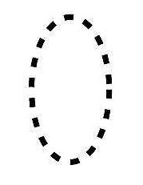

<!DOCTYPE html>
<html lang="en">
<head>
    <meta charset="UTF-8">
    <title>Title</title>
    <script src="https://cdn.staticfile.org/jquery/2.0.0/jquery.min.js"></script>
</head>
<body>
<input id="lo" type="button" value="超级变态">
<div style="width: 300px;height: 300px;background: red;position: absolute">
    <!---->
</div>


<script>
    // $(document).ready(function () {
    //     $('#lo').click(function () {
    //         // $('div').toggle()
    //         //     $('div').slideToggle(6000)
    //         // $('div').css('color','green')
    //         $("div").animate({
    //             left:'2550px',
    //             opacity:'0.5',
    //             height:'20px',
    //             width:'20px',
    //
    //         },5000);
    //
    //     })
    // })
    //  第一个事件:点击鼠标显示隐藏
// $(document).ready(function () {
//
//     $('#lo').click(function () {
//         $('div').toggle();
//     })
// })
//     第二个事件：慢慢的隐藏 慢慢的出来
//     $('#lo').click(function () {
//         $('div').fadeToggle(3000)
//     })
//     第三个事件：滑动切换 上下拉菜单

    // $('#lo').click(function () {
    //     $('div').slideToggle(3000)
    // })
    //   第四个事件：动画效果 可以多个属性
    //  $('#lo').click(function () {
    //      $('div').animate({
    //          left:'500px',
    //          width:'50px',
    //          opacity:'0.6',
    //          height:'40px',
    //         color:'yellow'
    //      },4000)
    //  })
      第五个事件
</script>
</body>
</html>